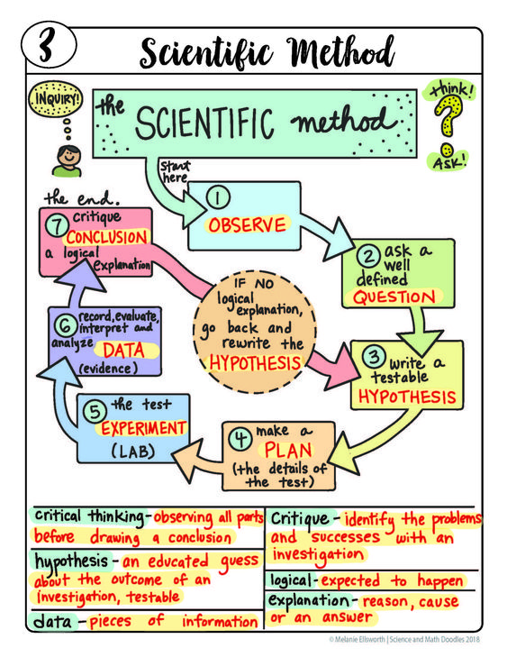
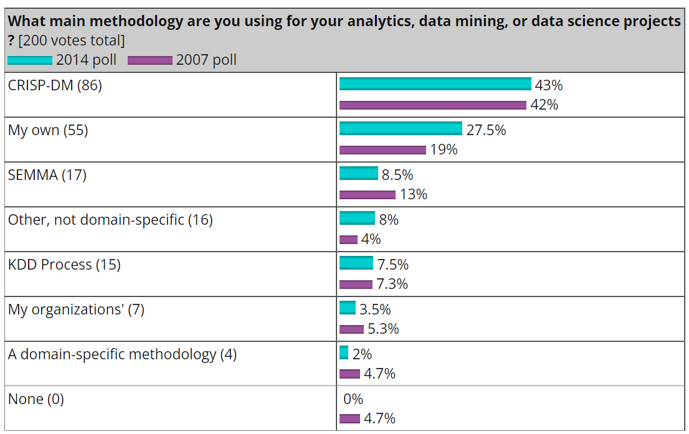
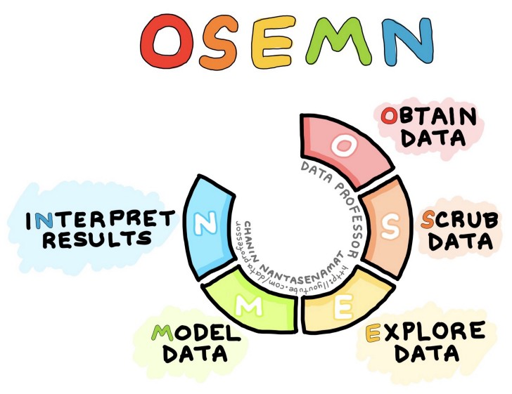
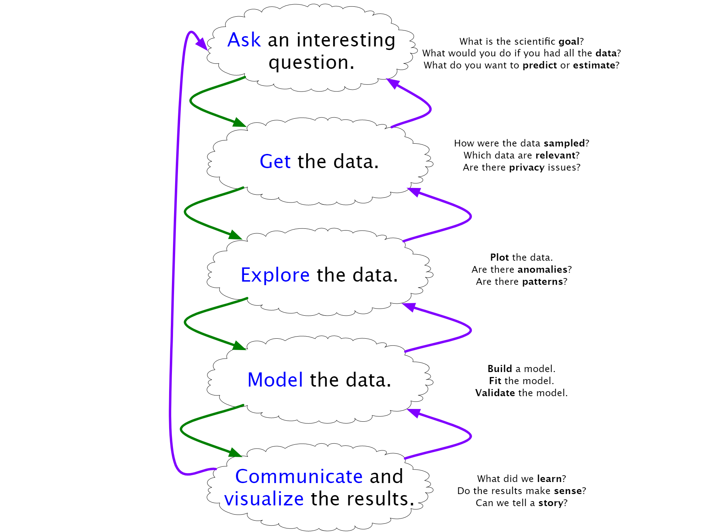
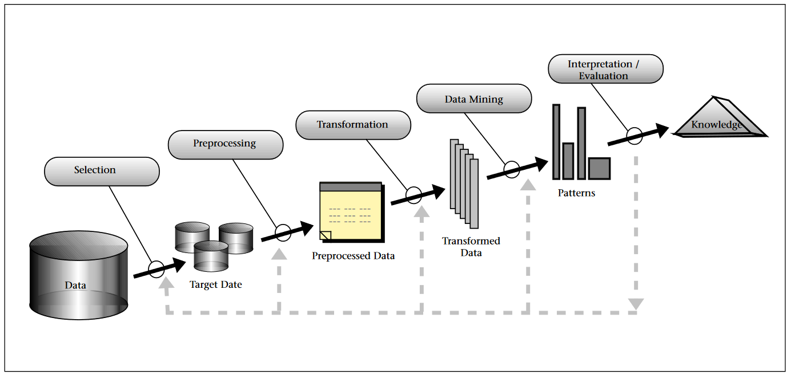

Data Analytics Workflows
Carlos Carrasco
What is a workflow?
A workflow is the sequence of steps involved in moving from the beginning to the end of a working process
Workflow, is the set of tasks—grouped chronologically into processes—and the set of people or resources needed for those tasks, that are necessary to accomplish a given goal .
Cain and Haque (2008)
Objective of a workflow
Define and construct the components of project cycles
A logical order helps to minimize transfer time between tasks
Reduce the time required to complete a tasks
Improve operations
Identification of repeated tasks
Streamline a process
Minimize mistakes
Helps to assure reproducibility.
A workflow example: The Scientific Method
Drawing from math and doodles
What is a data analytics workflow

Figure from Wickham and Grolemund (2016)
What is a data analytics workflow
The KDnuggets 2014 methodology poll.
Standardized workflows
There are several standardized workflows for data analytics
SEMMA
OSEMN
Blitzstein & Pfister
KDD Process
CRISP-DM
We will have a quick tour through them
SEMMA
This is a workflow developed by the SAS institute.
- Sample: Collect/Select the data required for sampling
- Explore: This consider the Exploratory Data analysis
- Modify: Feature engineering (Normalization, Dimension reduction)
- Model: Test various models
- Assess: Evaluate the the model results
OSEMN
Obtain, Scrub, Explore, Model, Interpret
OSEMN workflow drawn by Data Professor
Blitzstein & Pfister workflow
Workflow taught at Harvard CS109 Data science Course by Joe Blitzstein and Hanspeter Pfister (Github repository)
KDD Process
Knowledge Discovery in Databases
Knoledge Discovery in Databases process by Fayyad, Piatetsky-Shapiro, and Smyth (1996)
CRISP-DM
CRoss Industry Standard Process for Data Mining

Figure by Kennet Jensen on Wikipedia
{kind=link}
Summary
Figure from Wickham and Grolemund (2016)
Your future self will thank you!
Slides and code availability
This presentation is available at https://github.com/cicarrascog/GeoData-Analytics-AT2
References
KDnuggets 2014 methodology poll
Understanding Workflow by Oracle
The Data Science Process… by Chanin Nantasenamat in Towards Data Science
CS109 Data Science slides by Blitztein and Pfister at github.com
A Taxonomy of Data Science by Mason and Wiggins at dataist ( archive.org)
What is CRISP DM? by Data Science Process Alliance
Cross-industry standard process for data mining (CRIPS-DM) - Wikipedia
Workflow Definition & Meaning - Merriam-Webster
Best Practices For Data Science Project Workflows and File Organizations by neptune.ai
7 Benefits of Workflow Management System To Help You Free From Chaos (kissflow.com)
Video by Pressmaster: https://www.pexels.com/video/running-a-light-of-digital-information-3129977/
Photo by Isaac Smith on Unsplash
Photo by Alvaro Reyes on Unsplash
Photo by Hans Reniers on Unsplash
Photo by Kelly Sikkema on Unsplash
Photo by Pankaj Patel on Unsplash
Photo by Isaac Smith on Unsplash
Photo by Rafal Jedrzejek on Unsplash
Data Analytics Workflow - GeoData Analytics Course - Carlos Carrasco